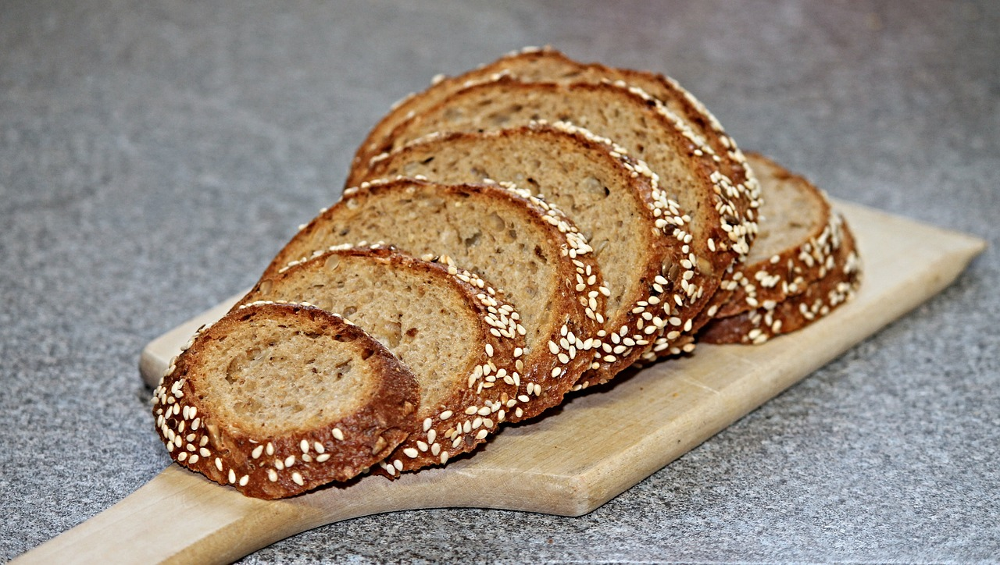
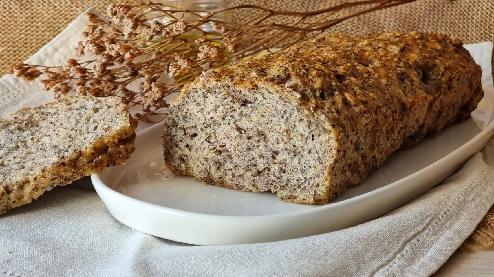

Barra de pan integral
Ingredientes para la masa:
- -Harina integral
- -Harina de trigo
- -Levadura
- -agua y sal
Modo de preparación resumido:
- -Mezclar harina integral, harina y levadura.
- -Agregar agua y amasar hasta obtener una masa homogénea.
- -Añadir sal y seguir amasando.
- -Dejar reposar la masa hasta que duplique su tamaño.
- -Dar forma a la masa en una barra y colocar en una bandeja para horno.
- -Hornear hasta que la barra de pan esté dorada y suene hueca al golpearla.
- ¡Listo! Ahora tienes una barra de pan integral casera. Ajusta las proporciones según tus necesidades y preferencias